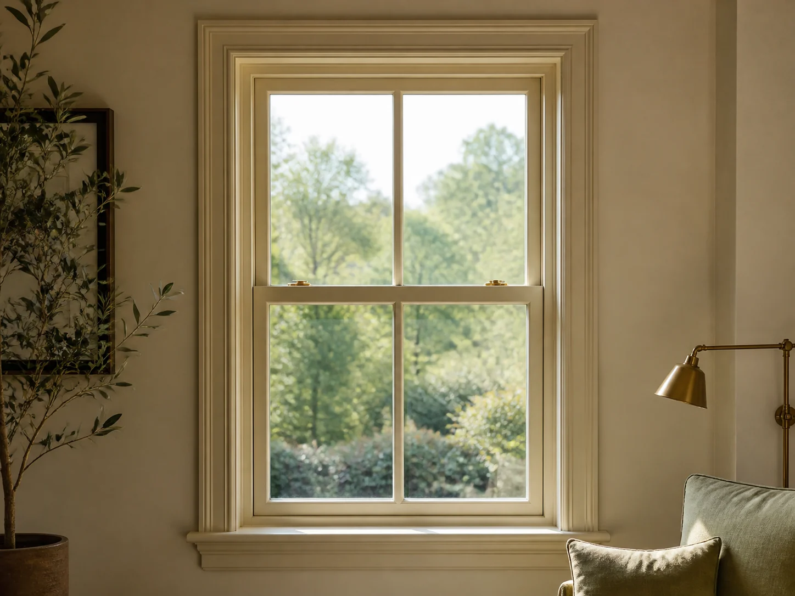
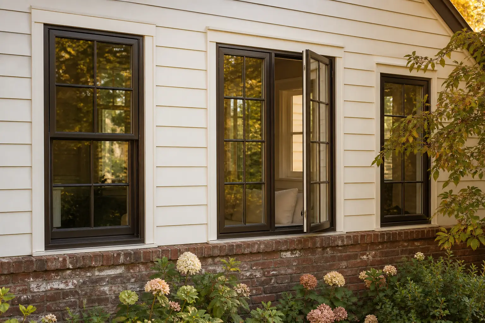
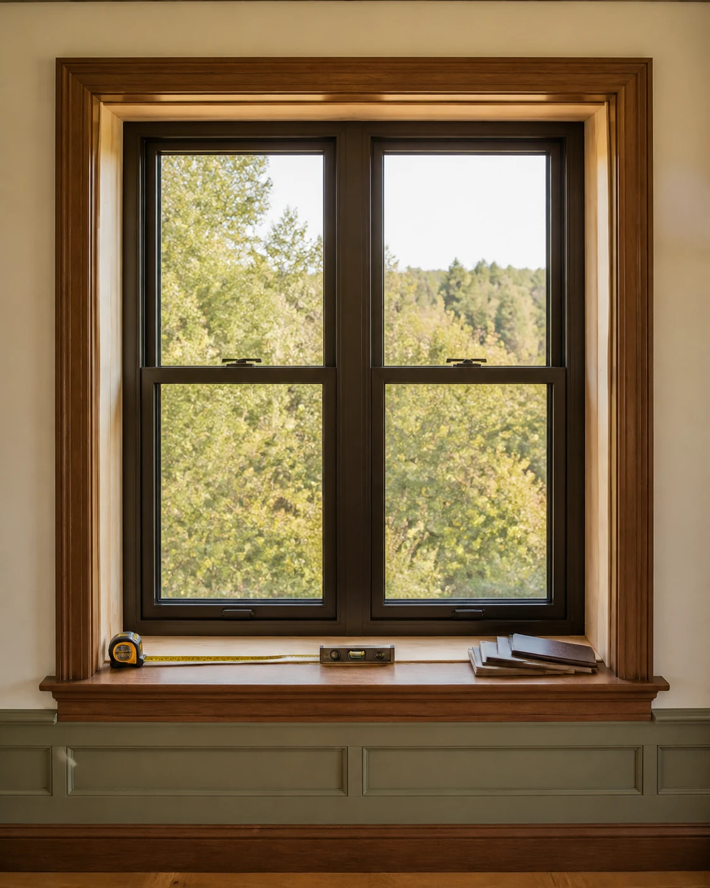
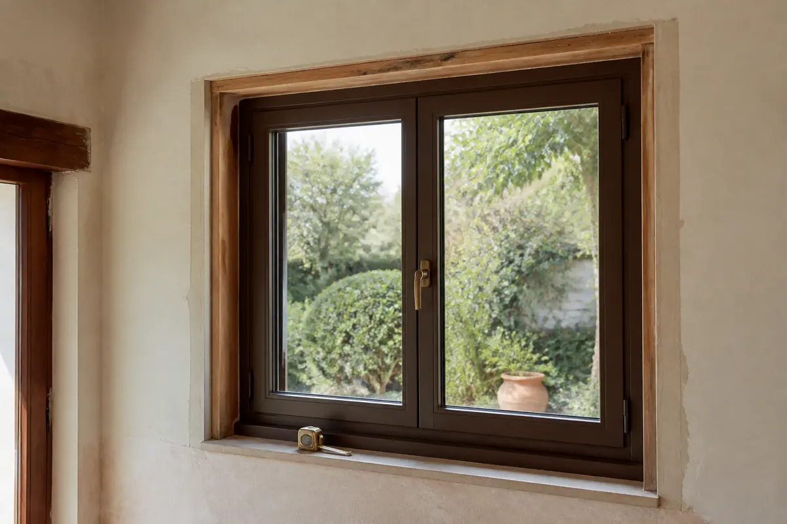

Double-hung
Two movable sashes provide familiar operation and flexible ventilation.
Planning new windows can involve more than choosing a style. Share the number of openings, current concerns, property details and preferred timing. Window Match may introduce the request to independent local providers that handle installation and replacement projects.
Describe your installation project
Air movement or rooms that remain noticeably warmer or colder may justify a closer inspection.
Moisture between insulated panes can indicate a failed glass unit rather than ordinary surface condensation.
Windows that stick, drop, refuse to lock or no longer remain open may need repair or replacement assessment.
Rot, cracks, swelling, separation and deteriorated finishes can affect the surrounding assembly.
Homeowners may explore modern glass packages for comfort, sound control or efficiency goals.
Remodels, additions and changed room layouts may require newly sized or configured windows.

Opening count, existing conditions, materials and access all influence how a replacement project is planned.

The number of openings helps describe the overall scope.
Frame, trim and moisture conditions can change the approach.
Different materials carry distinct maintenance and appearance considerations.
Glazing packages, coatings and intended comfort goals affect selection.
Landscaping, stairs and upper floors can influence access.
Surrounding trim, siding or paint may require coordinated work.
A local provider must inspect the openings and provide a project-specific scope and quote. Window Match does not estimate or guarantee pricing.
Share the details you know so an interested independent provider can better understand the installation or replacement project.